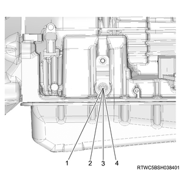
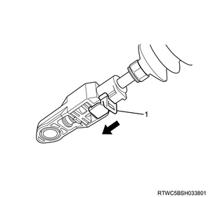
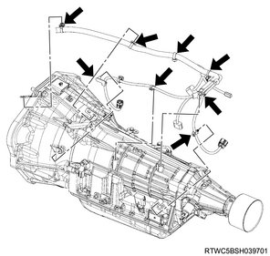
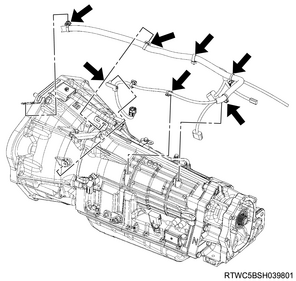

Transmission assembly installation (TB-50LS)
1. Cushion rubber installation
1. Install the cushion rubber to the transmission.
Note
- The following applies to 2WD.
- Install the rear engine mounting brackets to the transmission.
- Temporarily tighten the installation bolts for the rear engine mounting brackets.
- Securely tighten the installation bolts for the rear engine mounting brackets in the order of the numbers shown in the diagram.
Tightening torque： 51 N・m { 5.2 kgf・m / 38 lb・ft }
Note
- Install the cushion rubber to the rear engine mounting brackets.
Tightening torque： 51 N・m { 5.2 kgf・m / 38 lb・ft }
- Rear engine mounting brackets
- Cushion rubber
Note
- The following applies to 4WD.
- Install the cushion rubber to the transmission.
Tightening torque： 51 N・m { 5.2 kgf・m / 38 lb・ft }

2. Transmission assembly installation
1. Install the transmission to the engine.
Note
- Slowly operate the transmission jack so that the front of transmission aligns with the rear of the engine.
- Slowly operate the transmission jack so that the transmission becomes parallel to the engine.
- Tighten the transmission installation nut and bolt.
Tightening torque： 76 N・m { 7.7 kgf・m / 56 lb・ft }
- 26 mm {1.02 in}
- 50 mm {1.97 in}
- 14.5 mm {0.57 in}
- 18 mm {0.71 in}
- 4.5 mm {0.18 in}
- 29 mm {1.14 in}
- 12.5 mm {0.49 in}
- 2 mm {0.08 in}
- 60 mm {2.36 in}
- 12 mm {0.47 in}
- 17 mm {0.67 in}
- 3.2 mm {0.13 in}
- 32 mm {1.26 in}
- 15 mm {0.59 in}
- 22 mm {0.87 in}
- 27 mm {1.06 in}
- 15.5 mm {0.61 in}
- 14 mm {0.55 in}
- 19 mm {0.75 in}
- 17.5 mm {0.69 in}
- 20 mm {0.79 in}
3. Transmission crossmember installation
1. Install the transmission crossmember to the frame.
Tightening torque： 67 N・m { 6.8 kgf・m / 49 lb・ft }
2. Connect the cushion rubber to the transmission crossmember.
Tightening torque： 140 N・m { 14.3 kgf・m / 103 lb・ft }
3. Install the brace to the frame and the transmission crossmember.
Tightening torque： 106 N・m { 10.8 kgf・m / 78 lb・ft }
4. Remove the jack from the transmission.
5. Remove the wire from the engine hanger and the hoist.
6. Remove the rear engine hanger from the cylinder head.
7. Remove the front engine hanger from the cylinder head.
4. Flexible plate bolt installation
1. Install the flexible plate bolt to the torque converter assembly.
Note
- Install 6 new flexible plate bolts.
Tightening torque： 54 N・m { 5.5 kgf・m / 40 lb・ft }
5. Lower cover installation
1. Install the lower cover to the transmission.

Tightening torque： 9 N・m { 0.9 kgf・m / 80 lb・in }
6. Automatic transmission control cable connect
1. Install the auto mission control cable bracket to the transmission.
2. Connect the automatic transmission control cable to the select lever.
7. Automatic transmission control cable adjustment
1. Adjust the automatic transmission control cable.
Caution
- Adjust the automatic transmission control cable when replace the automatic transmission control cable.
Note
- Check that the selector lever is in the N position.
- Check that the transmission is in the N position.

- P
- R
- N
- D
Note
- Slide the cover in the direction indicated by the arrow.

- Cover
Note
- Use an ordinary screwdriver to move the lock piece from the position indicated by the arrow.
- Continue to move the lock piece until the adjuster position begins to change.

- Adjuster
- Lock piece
2. Connect the automatic transmission control cable to the select control lever.
Note
- Insert the lock piece to the adjuster.
- Slide the cover on the adjuster and secure lock piece.

- Cover
Note
- Press the select lever knob button 5 times, and then check that the select lever moves smoothly to each of its positions.
- Check that the shift position indicated by the selector lever and the actual shift position are the same.
8. ATF cooler pipe connect
1. Connect the ATF cooler pipe to the transmission.
Note
- After temporally tighten the flare nut and the bolt of the clip, tighten them to the specified torque.
Tightening torque： 44 N・m { 4.5 kgf・m / 32 lb・ft } Flare nut
Tightening torque： 23 N・m { 2.3 kgf・m / 17 lb・ft } Bolt
9. Starter motor installation
10. Transmission oil level gauge tube installation
1. Install transmission oil level gauge tube to the transmission.
Tightening torque： 22 N・m { 2.2 kgf・m / 16 lb・ft }
11. Oil level gauge installation
1. Install the oil level gauge to transmission oil level gauge tube.
12. Transfer assembly installation
Note
- The following applies to 4WD.
1. Apply the grease to the input shaft.
Note
- Apply BESCO L-2 grease or equivalent to the spline section.

2. Install the transfer assembly to the transmission.
Tightening torque： 41 N・m { 4.2 kgf・m / 30 lb・ft }

- 20 mm {0.79 in}
- 9 mm {0.35 in}
- 11 mm {0.43 in}
- 45 mm {1.77 in}
- 25 mm {0.98 in}
- 20 mm {0.79 in}
13. Engine harness connect
1. Connect the engine harness to the harness connector.

- Turbine speed sensor connector
- Transmission internal harness connector

- Output speed sensor connector and clip.
- Inhibitor switch connector
Note
- The following applies to 4WD.

- 2-4 switch connector
- Neutral switch connector
- Actuator connector
Note
- Connect the clips.
- 2WD
- With ABS

Note
- 2WD
- Without ABS

Note
- 4WD

14. Catalyst converter installation
15. Front propeller shaft assembly installation
Note
- The following applies to 4WD.
1. Install the front propeller shaft assembly to the flange.
Note
- Align the alignment marks of each joint that were made during removal to install.
Caution
- Never install the shaft assembly in the reverse direction.
- Clean the installation surface of the flange yoke and coupling driver to keep the surface free of foreign matter such as black paint, grease, and oil.
Note
- Tighten the bolt, nut and washer on the transfer side.
Tightening torque： 59 N・m { 6.0 kgf・m / 44 lb・ft }
Note
- Tighten the bolt, nut and washer on the front axle.
Tightening torque： 59 N・m { 6.0 kgf・m / 44 lb・ft }
Note
- After installing the propeller shaft, be sure to apply black paint to the whole exposed area except for the flange coupling mating surface.

- Flange coupling exposed area
Note
- Install the exhaust and the transfer protector.
16. Rear propeller shaft assembly installation
17. Cowl panel installation
1. Install the cowl panel to vehicle.
Note
- Install with the 8 bolts.

18. Wiper linkage connect
1. Connect the wiper linkage to vehicle.

- Nut
- Bolt
Tightening torque： 5.3 N・m { 0.5 kgf・m / 46 lb・in }
Note
- Connect the connector to the wiper motor.
19. Cowl cover installation
1. Install the grommet to the cowl panel.
Note
- Install with the top mark facing upward.
- After installing the grommet to the cowl panel, verify that it is installed securely.
- If the grommet drops off when it is pushed back into the cowl panel, install it again.

- Top mark
2. Install the cowl cover to the cowl panel.
3. Connect the washer hose to the clip.

- Grommet
- Connection of washer hose
20. Side cowl cover installation
1. Install the side cowl cover to the body.

- Side cowl cover
21. Wiper arm installation
1. Install the wiper arm to vehicle.
Caution
- Confirm that the wiper motor is stopped at the auto stop position.
Tightening torque： 31.0 N・m { 3.2 kgf・m / 22.9 lb・ft }

- 29 mm (1.14 in)
- 36.5 - 51.5 mm (1.44 - 2.03 in)
- 18 mm (0.71 in)
22. Wiper arm cover installation
1. Install the wiper arm cover to the wiper arm.
23. Engine cover installation
1. Install the engine cover to the engine.

- Engine cover
24. Engine hood assembly installation
1. Temporarily tighten the hinge bolt to the engine hood assembly.
Note
- Align the hinge with the marking made during removal.
2. Inspect the clearance.
Note
- Check the engine hood assembly and the fender.
3. Adjust the clearance to the specified value.
Note
- Adjust the installation of the engine hood hinge to adjust the clearance.

- Clearance: 4.0 mm {0.16 in}
- Height, level difference: -1.5 mm {-0.06 in}
Note
- Turn the hood rest to adjust its height, and adjust the level difference against the engine hood.

- Hood rest
4. Apply the grease to the striker.
Note
- Apply a thin layer of grease to the striker.
5. Install the engine hood garnish to the engine hood.
Note
- Tighten the 6 nuts to the specified torque.
Tightening torque： 6 N・m { 0.6 kgf・m / 53 lb・in }
6. Securely tighten the hinge bolt to the engine hood assembly.
Tightening torque： 6.5 N・m { 0.66 kgf・m / 58 lb・in }
25. Battery ground cable connect
1. Connect the battery ground cable to the battery.
26. Drain plug installation
Note
- If the transmission has been disassembled
1. Clean the drain plug using cleaning fluid.
2. Install the drain plug to the oil pan.
Note
- Install a new gasket and the drain plug to the oil pan.
Caution
- Be sure to install the gasket in the correct direction as shown in the figure.
Tightening torque： 20 N・m { 2.0 kgf・m / 15 lb・ft }

- Gasket
- Drain Plug
27. ATF filling
1. Replenish the transmission with the ATF.
Caution
- When Replenishing ATF, always perform the oil level adjustment using the overflow hole.
| Fluid capacity [Reference value] | |||
| Engine | Specification | Oil pan type | ATF |
| 4JJ1 | High ride | Deep | ： 10.55 to 10.85 L { 2.79 to 2.87 US gal / 2.32 to 2.39 Imp.gal } |
| 4JK1 | High ride | Deep | ： 10.05 to 10.35 L { 2.65 to 2.73 US gal / 2.21 to 2.28 Imp.gal } |
28. TCM reset
Caution
- After replacing the following parts, it is necessary to clear the TCM self-learning data.
Note
- Transmission assembly
Valve body assembly
Clutch No.1, No.2, and No.3 components
Brake No.1, No.2, No.3, and No.4 components
1. Connect a scan tool to the DLC.
2. Turn ON the ignition switch.
3. Select the Diagnostics.
4. Select Transmission.
5. Select AT.
6. Select Programming.
7. Select Clear Learning Value and Diag Information.
Note
- Clear the self-learning date following the instructions on the screen.